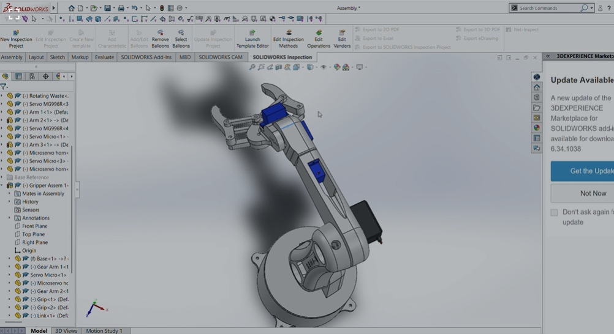
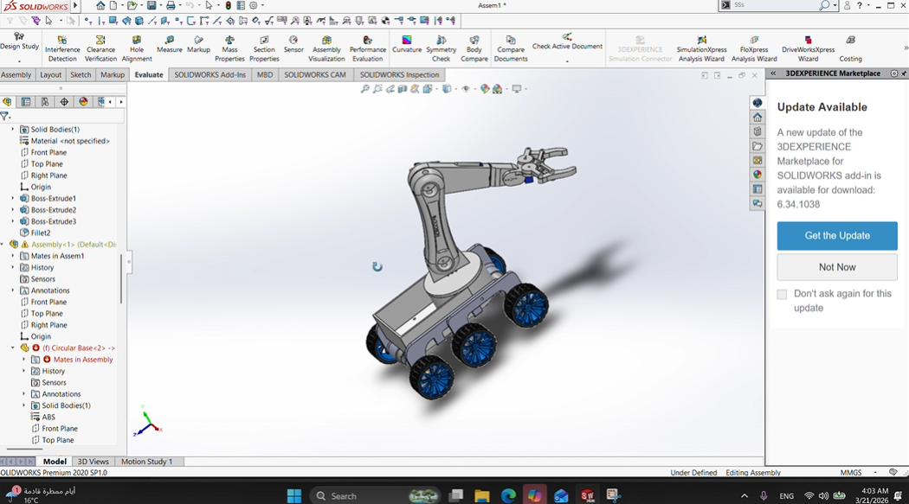
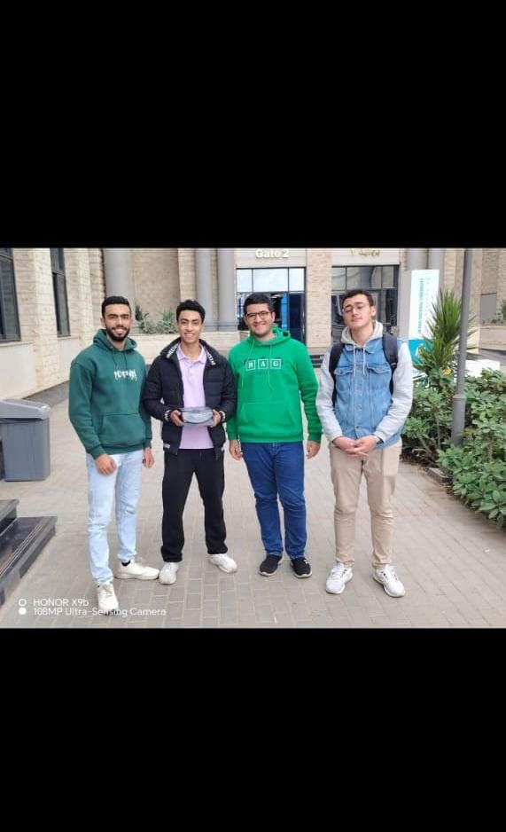
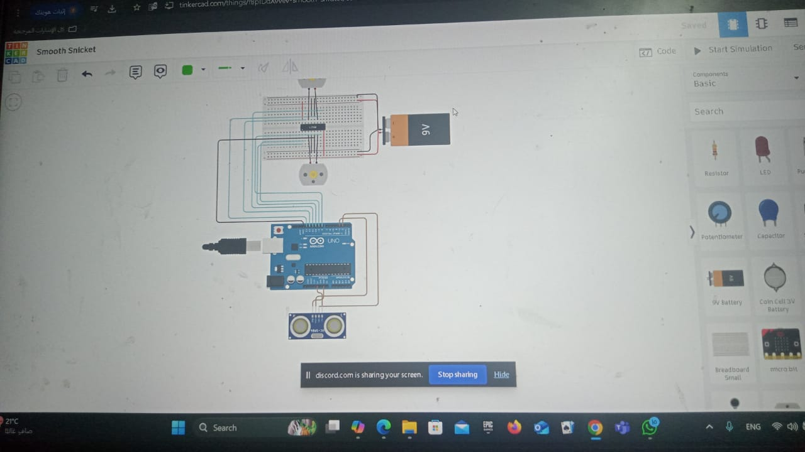

projects
Robot Arm

details
-
This project is a robotic arm currently under development for a national competition (Plaza Competition). The goal of the project is to design and implement a functional robotic arm capable of performing controlled movements with multiple degrees of freedom.
- DS3218 High Torque Servo for the base or main load-bearing joint
- MG996R Servo for intermediate joints
- SG90 Micro Servo for the gripper mechanism
The system is built using multiple servo motors with different torque ratings to handle various joints of the arm:
The project aims to achieve precise movement control, smooth operation, and reliable performance, while maintaining a modular and scalable design suitable for further improvements.
A robotic car

This project is a smart robotic car currently under development as part of a team project. The work includes
selecting appropriate components and designing the overall mechanical structure of the system.
The design phase has been completed, and the selected components were chosen based on performance,
compatibility, and system requirements. The project focuses on building a stable platform capable of integrating control systems and future automation features.
The system is planned to be powered and controlled using an external control setup, ensuring flexibility and
modularity in operation. The project aims to achieve a reliable mechanical design that can support further
development in control, sensing, and automation.
my first robot



This project is a Sumo robot developed as part of a university project. The main
objective of the robot is to detect objects in its environment and respond autonomously
by moving toward them, following a simple decision-making logic based on sensor input.
The system is built around an Arduino Uno microcontroller, which acts as the main control unit.
An ultrasonic sensor is used to detect obstacles in front of the robot by emitting ultrasonic waves
and receiving their reflections. Based on the measured distance, the robot determines whether an object
is within range.
When an object is detected within a predefined distance, the robot moves forward to approach and engage with the target.
If no object is detected, the robot continues to rotate in place to scan its surroundings and search for a target.
The robot’s behavior is implemented using simple control logic that continuously reads data from the ultrasonic sensor
and makes real-time decisions accordingly. This approach allows the robot to operate autonomously in a dynamic environment.
This project helped me gain hands-on experience in embedded systems, sensor integration, and basic autonomous control logic,
as well as practical implementation of Arduino-based systems.